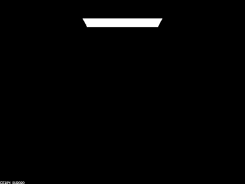
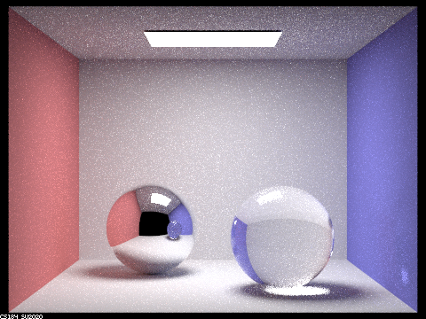

Part 1:
1.1: Images with different max ray depths at 64 samples per pixel and 4 samples per light
max_ray_depth = 0
max_ray_depth = 1
max_ray_depth = 2
max_ray_depth = 3

max_ray_depth = 4
max_ray_depth = 5

max_ray_depth = 100
1.2 and 1.3: Starting at m = 0, I see nothing but the direct light source itself because there are no bounces of light so nothing would be lit up except for the light source itself. As we increase the number of bounces, we see various multibounce effects: with one bounce we first see the environment lit up but the spheres are still black, except that we can see the reflection of the direct light at the top of the spheres. This is because we don't have enough bounces to recover the reflection/refraction of the environment, but we do see the reflection/refraction of the direct light above because it didn't originate from the first bounce. When we move to two bounces, we can see the reflection in the left sphere and the refraction in the right sphere, and as we keep increasing the number of bounces, both the reflection and refraction get brighter and easier to see. An interesting pivot point is when the max ray depth is 3, because in this, the reflection of the right sphere in the mirror left sphere is still black because there aren't enough bounces to recover the lit color of the right sphere. Once we go above three bounces, we can see that the reflection of the right sphere in the left sphere is purple, as it is a refraction of the purple wall next to it. By the time we get to 5 bounces vs 100 bounces, the visual difference isn't too large because at both 5 bounces and 100 bounces, the light has already bounced sufficiently enough to recreate a realistic looking version of the scene. A small difference is that with 100 bounces, the reflection of the right sphere in the left sphere is brighter and so is the majority of the scene as a whole, likely because with more light bounces, there is just more light on every part of the scene.
Part 2:
2.1: Images with different alphas at 128 samples per pixel, 1 sample per light, and 5 as the max ray depth
alpha = 0.5
alpha = 0.25
alpha = 0.05

alpha = 0.005
2.1 (cont.): As explained in the spec, the main difference in these photos is alpha, and as alpha gets smaller, the macro surface becomes smoother. As such, like explained in the spec, the macro surface tends to be diffuse when alpha is large and glossy when alpha is small. We can see this visually in the images as with alpha - 0.5, we can see that the light is very diffuse, as in the light is scattered everywhere so that the reflection on the dragon is somewhat uniform. As we go down in alpha value, and this can especially be seen with an alpha of 0.005, we see that the light is no longer very scattered. Instead, the reflection of the light on the dragon becomes mostly the result of what that part of the dragon is directly facing. For example, looking at alpha 0.005, we can see that the right side of the dragon is very purple and that's because the wall to the right is purple, and the parts of the dragon that have normals pointed towards us, the viewer, are black, because the wall that we are looking through is black (you can see this in the reflection of the spheres from part 1). In between 0.005 and 0.5 alpha, we have a sliding scale of these effects, and the alpha values in between are a combination of diffuse and glossy.
2.2: Comparison between cosine hemisphere sampling and importance sampling at 64 samples per pixel, 1 sample per light, and 5 as the max ray depth
Cosine Hemisphere Sampling (default)
Importance Sampling (at alpha = 0.25)
2.2: The main difference between cosine hemisphere sampling and importance sampling is that cosine hemisphere sampling has a lot more noise in the reflection on the object. Looking at the images above, we can see that the bunny has a lot more black specks, especially around the edges. With cosine hemisphere sampling, the edges are misinterpreted as reflecting light from the direction of us, the viewer, which is why they end up black. With importance sampling, the colors are much more smooth and consistent, so even though both images somewhat reflect the light of the environment around it (right side of bunny is purple, facing us is black, left side is red), in importance sampling the colors are more solid because they are a statistical average of the lighting whereas in cosine hemisphere sampling there are a lot of areas where what should be mostly a solid color is broken up by little black specks.
2.3: Material this is emulating: Zinc
It looks pretty accurate with the silver glossy finish. As recommended on piazza, I used https://refractiveindex.info/?shelf=main&book=Zn&page=Werner and recorded eta and k at roughly the red, green, and blue wavelengths.